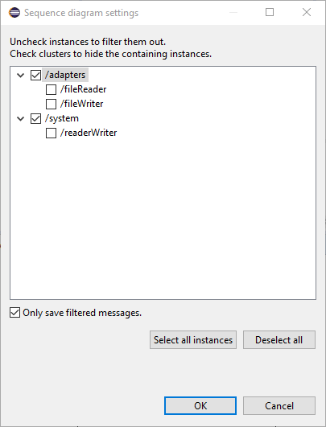

Sequence Diagram
The Sequence Diagram view is used when debugging a POOSL model. It displays message communications between processes and clusters in the form of a sequence diagram. The displayed values are computed using the corresponding data method printString. Message communications appear when the simulation makes a communication transition. This applies both to the resume mode, and the various kinds of steps; in particular communication steps (<F7>) are useful.
The Sequence Diagram view allows filtering out processes / cluster and collapsing clusters so that only communication outside the cluster is visible. Hovering over a lifeline, message or timestamp will provide additional information about it. Clicking messages updates the Eclipse properties view with all information about the message.
In a single simulation run, many message may be communicated. There are two important mechanisms to avoid memory problems:
- Message filter, which by default only saves messages for the visible lifelines. This can be changed in the sequence diagram settings; see the description below.
- Circular message buffer, which by default is set to contain at most 1000 messages. The maximum buffer size can be changed in "Window -> Preferences -> POOSL -> Sequence Diagram" as shown in the picture below.

Clear the sequence diagram view
Click the "Clear messages" button in the toolbar of the sequence diagram view.

Lock the position of the diagram timeline
This allows convenient scrolling through the sequence diagram during a running simulation. The displayed messages are not affected by new messages from the running simulation, until the moment that the displayed messages are removed from the buffer (because too many new messages have been received; to increase the buffer size, see the beginning of this section).
- Click the "Scroll lock" button in the toolbar of the sequence diagram view.
Filtering instances and collapsing clusters
- Click the "Open settings" button in the toolbar of the sequence diagram view.

- All instances are shown in a tree under system.
- Uncheck the instances that need to be filtered out.
- Click a cluster to show messages on cluster level instead of containing instances.

- The filter will be saved in the launch configuration. This enables you to reuse the filter setting in subsequent simulations of the same model.
- When the option "only save filtered messages" is/was switched on, any change in the filter requires the message buffer (with previously communicated messages) to be cleared to guarantee consistency.
Reordering lifelines
When lifelines are visible in the sequence diagram view click and hold to drag the lifeline to a new position. The order of the lifelines will be saved in the launch configuration.
CoSimulation
During Co-simulation the root contains an additional group called adapters.
This group shows the instances of external adapters. Using the filter option it is possible to only show the message going to external adapters.
